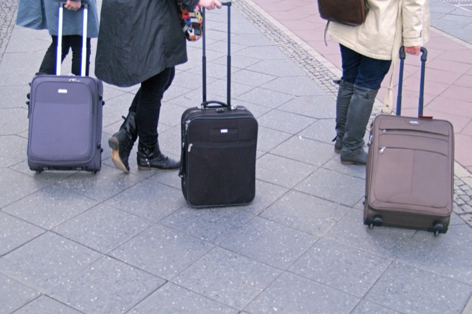
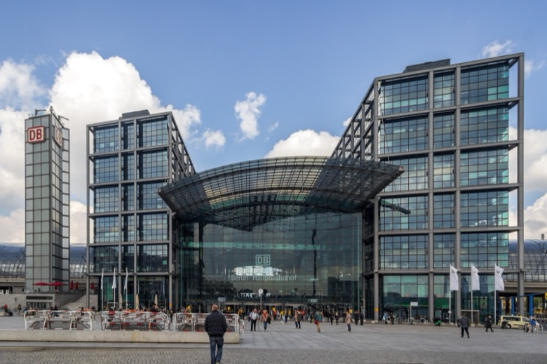
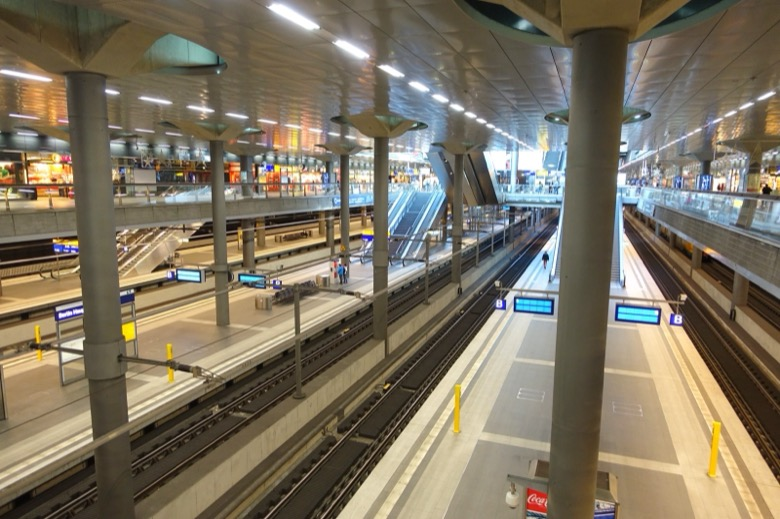
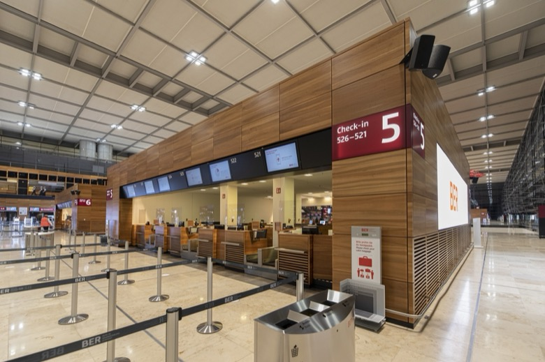
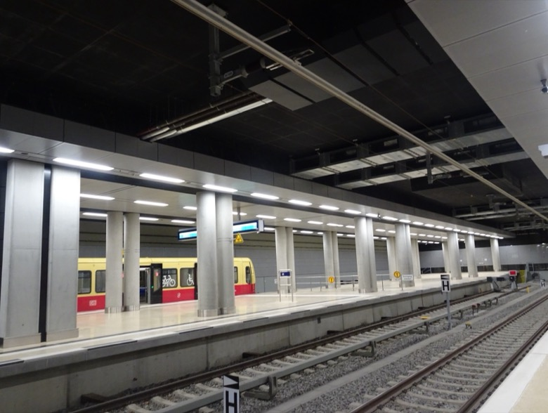

1Ditch the bagsHotel desk, station locker, storage app, or airport storage first.
Don't let travel logistics ruin your final hours. Keep the plan simple, ditch the bags early, and protect your airport or station time.
The secret is not doing more. It is doing the last few things in the right order: bags, one central stop, direct transit, security or platform, then snacks.





Photo credits: Dirk Ingo Franke / CC BY 3.0; Perituss and Daderot / CC0; Alexander Migl / CC BY-SA 3.0 DE; Tbachner / CC BY-SA 4.0.
Drop the bags, enjoy one central final stop, then move toward the airport or station before the day gets expensive.
Spree and Reichstag exterior near Hauptbahnhof: beautiful, central, and easy to leave from.
Use hotel storage or station lockers before sightseeing. Do not drag a suitcase into the final walk.
Only if your departure is late and you can stay luggage-free for the 2 hours walk.
A calm final coffee or walk is better than one extra distant stop followed by a stressed transfer.